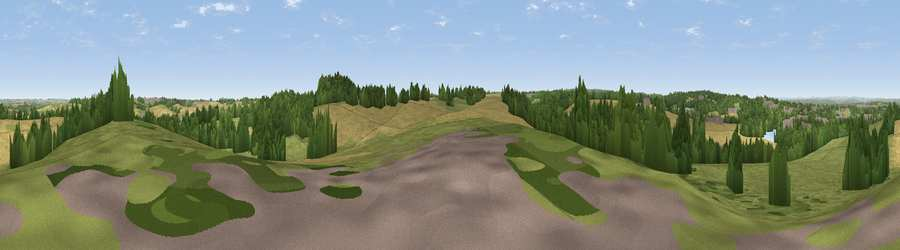

Viewpoint near Wilson
#25475 in England · top 39% of its area beats it · near WilsonThe view, rendered

A 360° render of this exact spot computed from the terrain model, tree cover and land cover — summer colours, afternoon light, calibrated against photographs of famous viewpoints. Real trees, hedges and buildings will differ in detail.
The panorama
Grey silhouette: terrain skyline in each direction (720 bearings, Earth curvature and refraction included). Dashed green: skyline with trees (+15 m) and buildings (+8 m) as obstacles. Blue strip: how far the ground is visible on each bearing.
Where the view opens
Wedge length = distance to the farthest visible ground on that bearing (vegetation-aware). Rings at 10, 25 and 50 km.
What fills the view
37% cropland · 36% grassland · 23% woodland · 3% built-up ·
Angular shares of the visible panorama (visual magnitude), not map area. Landscape diversity 0.53 (0–1 Shannon).
Key numbers
More beautiful places nearby
The staircase of upgrades: each row has a higher view potential than everything closer. Driving times are estimates from straight-line distance, calibrated against real road routing — check an actual route before setting out.
| Place | Direction | Drive | Score |
|---|---|---|---|
| Breedon Hill | SE · 1 km | ~3 min | 57.9 |
| Viewpoint near Hartshorne | WSW · 6 km | ~14 min | 59.5 |
| Viewpoint near Whitwick | SSE · 9 km | ~17 min | 63.6 |
| Viewpoint near Whitwick | SE · 9 km | ~17 min | 71.2 |
| Ives Head | SE · 11 km | ~21 min | 73.3 |
| Viewpoint near Stanton under Bardon | SSE · 13 km | ~23 min | 76.0 |
| Viewpoint near Woodhouse Eaves | SE · 15 km | ~26 min | 77.7 |
| Viewpoint near Mow Cop | WNW · 63 km | ~86 min | 80.2 |
52.81367, -1.41280 · source: screening · position refined by local search. Computed location — check access rights before visiting.